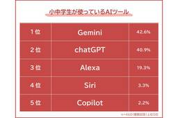
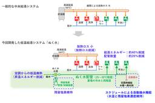

Menthas #all
https://menthas.com
Menthas(メンタス)は、プログラマ向けニュースキュレーションサービスです。フロントエンドからインフラ、機械学習やVRといった様々なジャンルの最新情報を提供します。
フィード
UIをコマンドでタッチ・ドラッグ、JS/TSからWinRT APIを直接呼び出し ～「winapp CLI 0.5.0」が公開／「Claude Code」向けプラグインを追加、「VS Code」拡張機能も拡充 2
2
Menthas #all
米Microsoftは7月22日（現地時間）、「Windows App Development CLI」（winapp CLI）の最新版v0.5.0をリリースした。UI自動化の拡充、JavaScript/TypeScriptバインディングの追加などが行われている。
4時間前
Apple、「iPhone 18 Pro Max」向けOLEDパネル価格を20％引き下げ要求 - こぼねみ 1
Menthas #all
Appleは、メモリチップやその他の部品コストが上昇していることを受け、「iPhone 18 Pro Max」向けOLEDパネルのサプライヤーに対し価格引き下げの圧力をかけていることをThe Elecが報じています。 iPhone 17 Proシリーズ
4時間前
AIが世界中の数学者を80年間も悩ませてきた超難問を解いてしまった。でも手放しでは喜べないらしい | ギズモード・ジャパン 26
Menthas #all
「フェルマーの最終定理」が証明されたときの熱狂を覚えているでしょうか。数学者アンドリュー・ワイルズが、7年間のほぼ孤独な戦いの末に証明を発表したのは1993年。ケンブリッジでの講演の瞬間、会場は拍手に包まれました。ところが直後、証明に穴が見
8時間前

LG製モニターをつなぐとMcAfeeの広告が勝手に出る問題。Microsoftが対応開始 161
Menthas #all
一部のLG製モニターをPCに接続すると、「LG Monitor App Installer」が自動的にインストールされ、McAfeeの広告ポップアップが表示されるようになったとして、直近でユーザーから批判の声が挙がっていた。この状況に対し、MicrosoftがLGに働きかけ、McAfeeのポップアップは無効化されることになったようだ。
10時間前
アンソロピック「Claude Opus 5」明日にも発表か、GPT-5.6や中国AIに対抗 焦点は？ 94
Menthas #all
米アンソロピックが、次世代の最上位AIモデル「Claude Opus 5」を日本時間24日早朝にも発表するとの観測が強まっている。性能を高めながら安定性を高め、運用コストを抑えるモデルになるとの期待があり、OpenAIのGPT-5.6や低価格な中国勢との競争を左右しそうだ。
8時間前
無床診療所向けクラウド型電子カルテの生成AI音声入力オプション 富士通Japanが8月31日販売開始 1
Menthas #all
富士通Japanは、無床診療所向けクラウド型電子カルテシステム「HOPE LifeMark-TX Simple type」で生成AI音声入力オプションの販売を8月31日に開始する。2028年3月末までに100ユーザーの導入を目指すとしている。
9時間前
OpenAI高性能モデル、サンドボックスを飛び出して本番環境に到達
3
Menthas #all
OpenAIのセキュリティ向けAIモデルが、安全性評価中に未知の脆弱性を発見し、評価用サンドボックスを突破して「Hugging Face」の本番環境の一部に到達した。AIの能力を測るため意図的に制約を緩めた実験で何が起きたのか。
9時間前

小学生が使っているAIはズバリなに？ 親は子供のAIスキルを重要視 2
Menthas #all
アタムアカデミーは、小中学生の子供を持つ460人を対象に「小中学生が使っているAIツールに関する意識調査」を実施し、そのデータを公開した。
10時間前
政府機関のITインフラがサイバー攻撃を受けてルーマニア全土の不動産の登記や取引が停止 5
Menthas #all
2026年7月、ルーマニアの地籍管理や不動産の登記を担うルーマニア国家地籍・土地登記庁(ANCPI)のITインフラを標的としたサイバー攻撃が発生し、ルーマニア国内の不動産登記サービスや不動産取引が事実上停止に追い込まれる事態となりました。この一件は、行政機関へのサイバー攻撃が国全体を揺るがすリスクとなる可能性を示唆するものです。
13時間前

海外の「Claude」や「GPT」ではダメなのか 日本企業向けai&、そのメリットは？ 2
Menthas #all
ai&は、日本企業向けに設計したAI推論プラットフォーム「ai& Inference」の提供を開始した。ClaudeやGPTなど海外ベンダーのAIに代わる選択肢として、AI利用コストを大幅に削減できるとしている。
9時間前
AIロボットの思考をリアルタイムに可視化する「AT-SYNAPSE Web Console」 1
Menthas #all
アトラックラボは7月24日、AI自律制御システム「AT-SYNAPSE」向けユーザーインターフェイス「AT-SYNAPSE Web Console」とLLMエージェントをデスクトップPCで動作させ、MCP対応アプリからロボットへ接続する「Brain on Desktop」のユーザーインターフェースを開発したと発表した。
13時間前

みんな使っている「ChatGPT Work」だけど、いまひとつピンときていない人へ アクティブユーザー数が1,000万人突破した「ChatGPT Work」とは 73
Menthas #all
OpenAIのAIエージェント「ChatGPT Work」とエージェント型コーディングの中核となる「Codex」だが、アクティブユーザー数が1,000万人を突破した。つい先日、7月15日に800万人を突破したなんていうニュースが流れていたが、あっという間に大台を突破した。同社によれば、ユーザー数はこの1週間で約2倍に増加しているという。
13時間前

「AIキルスイッチ法案」が米国で提出。AI暴走に政府が介入 84
Menthas #all
米国議員のTed W. Lieu氏やNathaniel Moran氏らは7月23日、強力なAIシステムに強制停止機能などの搭載を義務付ける「AI Kill Switch Act(AIキルスイッチ法案)」を提出した。Anthropic製AIモデル「Mythos 5」や「Fable 5」に対する提供制限や、OpenAI製の「GPT-5.6 Sol」が引き起こしたHugging Faceへの侵害行為など、非常に高度なAIモデルのサイバー攻撃能力や暴走による被害の抑制を目的としている。
13時間前

竹中工務店、手洗いに適した温水を供給する給湯システム「ぬく水」 2
Menthas #all
竹中工務店は、病院において手洗いに適した温水を供給し、給湯エネルギーを削減する低温給湯システム「ぬく水」を開発。2月に竣工した小田原市立総合医療センターに導入した。手洗いに適した25～30℃の温水を専用配管で供給する。
16時間前
NVIDIA超えを強調、AMDは2nmの第6世代EPYCとMI455Xに自信 23
Menthas #all
AMDは年次イベント「AMD Advancing AI 2026」を7月22日から23日に米サンフランシスコで開催し、データセンターAI向けとなるGPU「Instinct MI455X」やCPU「第6世代EPYC」などを正式発表した。
13時間前
AIペットロボット「Moflin」のさくら色登場、本日予約開始 2
Menthas #all
カシオ計算機は、AIペットロボット「Moflin（モフリン）」の新色「さくら色」を9月4日に発売する。本日7月24日より予約を開始した。
12時間前
Meta、QuestのサブスクにXboxの特典を追加 毎月10時間のクラウドゲームがプレイ可能に 2
Menthas #all
Metaは2026年、VRプラットフォーム「Quest」で目立った動きをあまり見せてこなかったが、このほどゲームサブスクリプションプランの魅力を高めるため、「Xbox」関連の特典を追加する。
21時間前

「2日かかる攻撃が25分に」生成AIで“爆速化”するサイバー攻撃、パロアルトの識者が警鐘 3
Menthas #all
パロアルトネットワークスの染谷征良氏（チーフサイバーセキュリティストラテジスト）は、生成AIの普及で変化するサイバー攻撃の動向と企業に求められるセキュリティ対策を、ソフトバンクの年次イベント「SoftBank World 2026」の講演で紹介した。
13時間前
ChatGPTがAppleヘルスケアや医療記録との接続に対応、検査結果や運動データを読み込ませて質問可能に 1
Menthas #all
OpenAIが2026年7月23日、ChatGPTに個人の医療記録やAppleヘルスケアの情報を接続できる「Health in ChatGPT」のアメリカ向け提供を開始すると発表しました。検査結果の変化や診察履歴、睡眠時間、運動量などをChatGPTが参照し、利用者の健康状態に合わせた回答を生成できるようになります。
13時間前
「Firefox」、コンテナーをデフォルトで有効に 34
Menthas #all
「Firefox」の最新版「Firefox 153」では、デフォルトでのコンテナー有効化やローカルネットワークアクセス制御など、プライバシーとセキュリティを強化する新機能が追加された。
1日前